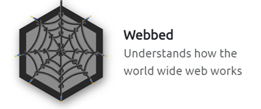

☰ Menu
Learning Paths
Pre-Security Path
Cyber Security Introduction
Network Fundamentals
How the Web Works
Linux Fundamentals 1, 2, & 3
Windows Fundamentals
Learning Cyber Security
Web Application Security
Network Security
Principles of Security
The CIA Triad
Principles of Privilege
Security Models
Threat Modelling & Incident Response
Introductory Networking
The OSI Model
Encapsulation
The TCP/IP Model
Networking Tools
Ping
Traceroute
WHOIS
DIG
What is Networking?
IP & MAC addresses
Intro to LAN
LAN Topologies
A Primer on Subnetting
ARP Protocol
DHCP Protocol
OSI Model
Layer 7 - Application
Layer 6 - Presentation
Layer 5 - Session
Layer 4 - Transport
Layer 3 - Network
Layer 2 - Data Link
Layer 1 - Physical
Packets & Frames
TCP/IP (3-Way Handshake)
UDP/IP
Ports 101
Extending your Network
Port Forwarding
Firwalls 101
VPN Basics
LAN Networking Devices
Wireshark
Network Services One
Understanding, Enumerating, and Exploiting SMB
Understanding, Enumerating, and Exploiting Telnet
Understanding, Enumerating, and Exploiting FTP
Network Services Two
Understanding, Enumerating, and Exploiting NFS
Understanding, Enumerating, and Exploiting SMTP
Understanding, Enumerating, and Exploiting MySQL
Web Fundamentals

How the Web Works
 HTML
Javascript
Senstitive Data Exposure
HTML Injection
HTML
Javascript
Senstitive Data Exposure
HTML Injection
HTTP in Detail
What is HTTP(S)
Requets & Responses
HTTP Methods
HTTP Status Codes
Headers
Cookies
Making Requests
DNS in Detail
Domain Hierarchy
Record Types
Making a Request
Windows Fundamentals One
Windows Editions
The Desktop (GUI)
The File System
The Windows/System32 Folders
User Accounts, Profiles, and Permissions
User Account Control
Settings and The Control Panel
Task Manager
Windows Fundamentals Two
System Configuration
Change the UAC Settings
Computer Management
System Information
Resource Monitor
Command Prompt
Registry Editor
Windows Fundamentals Three
Windows Security
Virus & Threat Protection
Firewall & Network Protection
App & Browser Control
Device Security
Device Security
BitLocker
Volume Shadow Copy Service
Passive Reconnaissance
Passive vs. Active Recon
WHOIS
NSlookup and DIG
DNSDumpster
Shodan.io
Active Reconnaissance
Web Browser
Ping
Traceroute
Telnet
Netcat
Pentesting Tools
 Nmap
Nmap Switches
Scan Types
Nmap
Nmap Switches
Scan Types
TCP Connect Scans
SYN Scans
UDP Scans
NULL, FIN, and Xmas
ICMP Network Scanning
NSE Scripts
Firewall Evasion
Metasploit
Burp Suite
 John the Ripper
John the Ripper
 Nessus
Hydra
Nessus
Hydra
Pentesting Fundamentals
 What is Penetration Testing?
penetration Testing Ethics
Penetration Testing Methodologies
Black Box, White Box, and Grey Box Testing
What is Penetration Testing?
penetration Testing Ethics
Penetration Testing Methodologies
Black Box, White Box, and Grey Box Testing
Hacked Boxes
Pickle Rick
Web Server Exploitation
Simple CTF
Beginner Level
Bounty Hacker